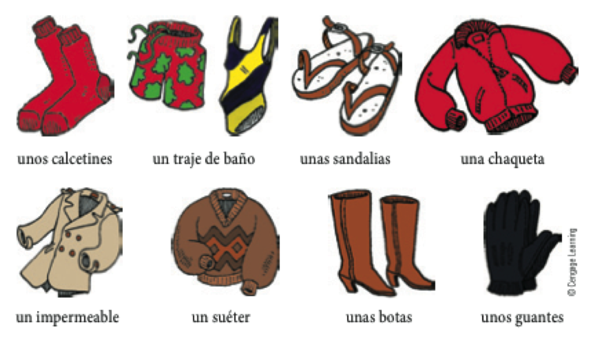
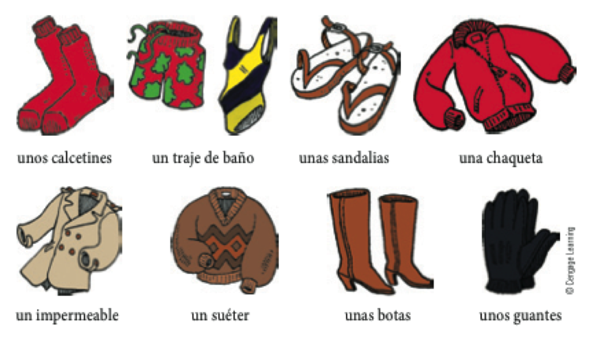
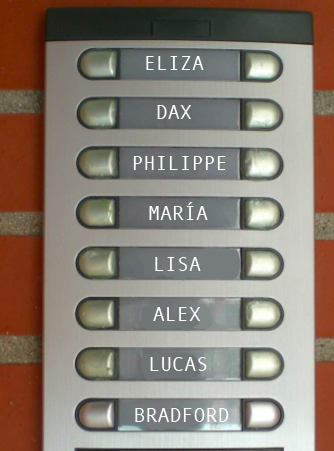
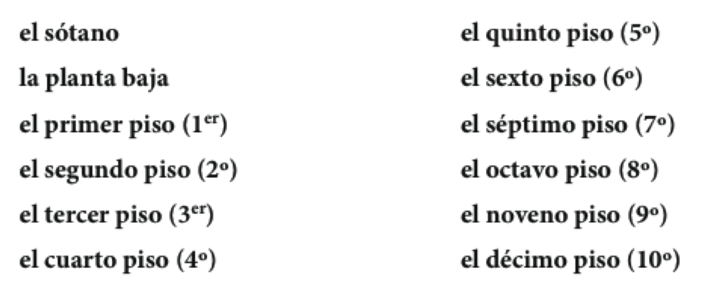
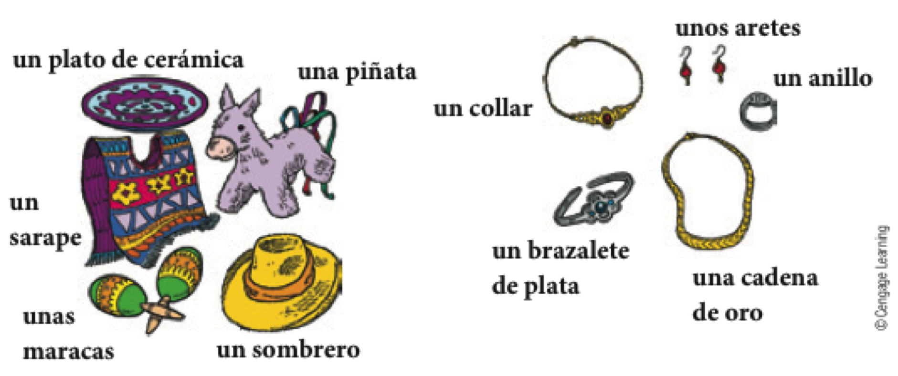
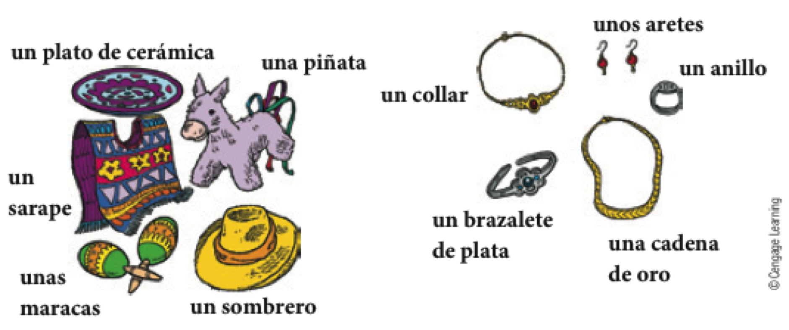
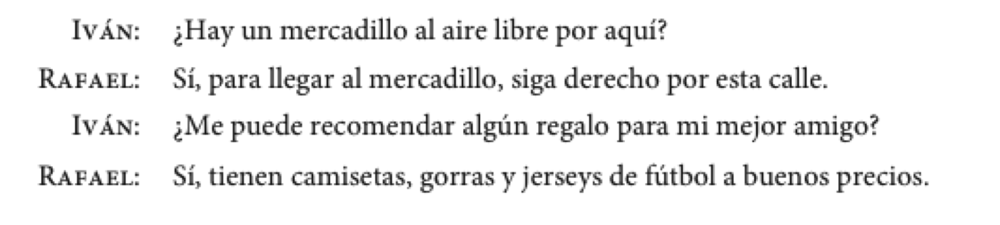
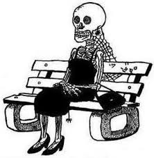
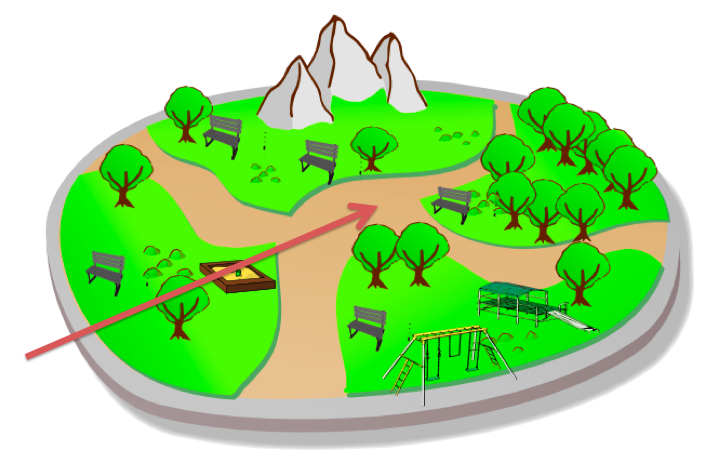
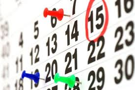

Español 1.5
Capítulo 6
Joseph V. Casillas
Middlebury College: Verano 2015
Instrucciones para el examen oral 2
Repaso
El pretérito (irregulares)

traje es para
sin acentos
Cambios ortográficos en la forma yo
- -car (buscar, tocar, sacar)
- c > qu
- toqué, tocaste, tocó, tocamos, tocasteis, tocaron
- -gar (llegar, jugar, pagar)
- g > gu
- llegué, llegaste, llegó, llegamos, llegasteis, llegaron
- -zar (empezar, almorzar)
- z > c
- empecé, empezaste, empezó, empezamos, empezasteis, empezaron
Los verbos de –er y –ir con una vocal: Leer, creer y caerse
- Leer
- leí, leíste, leyó, leímos, leísteis, leyeron
- Creer
- creí, creíste, creyó, creímos, creísteis, creyeron
- Caerse
- me caí, te caíste, se cayó, nos caímos, os caísteis, se cayeron
Verbos con cambios en la raíz en el pretérito:
| e > i | o > u | |
|---|---|---|
| divertirse | dormir | |
| yo | me divertí | dormí |
| tú | te divertiste | dormiste |
| Ud./él/ella | se divirtieron | durmió |
| nosotros(as) | nos divertimos | dormimos |
| vosotros(as) | os divertisteis | dormisteis |
| Uds./ellos/ellas | se divirtieron | durmieron |
- ¡OJO!: Estos cambios sólo ocurren en la segunda y tercera persona (Ud., él, ella y Uds., ellos, ellas)
¿Qué harías si...
- te tocara la lotería?
- se te olvidara hacer la tarea?
- tu mejor amigo/a te traicionara?
- no supieras la respuesta en clase?
- tu pelo fuera un lío caliente?
Capítulo 6 “De compras”
Plan

- Vocabulario:
- La ropa
- Los pisos
- Gramática:
- Adjetivos
- Más verbos como gustar
- Instrucciones Examen Oral 2
Con un compañero...
- Haced una lista de la ropa que se suele llevar en las siguientes situaciones:
- en una boda
- en clase
- en la misa
- en la playa
- en la primera cita
- para dormir
- en casa
De compras en un gran almacén
 


Los colores y otros detalles de la ropa

- ¿Cuál es tu color favorito?
- ¿Cuál es el color favorito de uno o dos de tus compañeros?
- ¿Cuál es el color que menos te gusta y por qué?
Los colores son adjetivos
- Se colocan después del sustantivo.
- Me gustaría comprar un vestido rosado.
- Comparten el número y género con el sustantivo.
- Quiero unos calcetines rojos.
- No quiero ninguna camiseta roja.
- Ej. 6-2, p. 197
Los adjetivos demostrativos
| Género | Número | |||
|---|---|---|---|---|
| masculino | singular | este | ese | aquel |
| masculino | plural | estos | esos | aquellos |
| femenino | singular | esta | esa | aquella |
| femenino | plural | estas | esas | aquellas |
- Se colcocan antes del sustantivo.
- Prefiero ese vestido.
- Comparten el número y género con el sustantivo.
- Estas chaquetas cuestan 20 dólares.
Con un compañero...
Describe la ropa de algunas de las personas de la clase. Tu compañero/a tiene que adivinar a quién describes.
Audio, 35, p. 200
Encuesta (prueba)
¿Dónde vive el/la compañero/a?

Los pisos

Los números ordinales
- Se colocan antes del sustantivo.
- Austin vive en el cuarto piso.
- Comparten el número y género con el sustantivo.
- Prefiero la segunda falda.
- Trabajaríamos los primeros días
Un repaso: el verbo gustar
- El verbo gustar usa dos formas: gusta y gustan
- Un complemento indirecto expresa a quién le gusta.
(me, te, le, nos, os, les)
- Me gusta la blusa.
- A Sara le gustan las camisas.
Importar, faltar y quedar siguen el modelo de gustar.
- Importar > importa / importan
- A Marisa no le importa el precio.
- Faltar > falta / faltan
- Les falta un dólar.
- Quedar > queda / quedan
- No me quedan más suéteres azules
El verbo parecer va acompañado de un adjetivo.
- Nos parecen caros esos pantalones.
- Pantalones > masculino, plural
- Me pareció divertida la película.
- la película > femenina, singular
- ¿Qué te parece(n)...
- el club de cocina?
- las fiestas en el grill?
- la comida de proctor?
- los partidos de fútbol?
El verbo quedar tiene otro significado para la ropa
- Se usa con bien / mal.
- Me quedan bien esos pantalones.
- Se usa con los adjetivos para describir más.
- Le quedan un poco apretados esos zapatos.
Ejercicios
- 6-11, p. 203
- 6-12, p. 204
Plan
- Vocabulario:
- Los recuerdos
- La ropa
- Gramática:
- palabras indefinidas negativas
- por y para
- Preparación Examen Oral 2: en parejas (capítulos 4, 5 y 6)
Los recuerdos
- ¿Qué cosas se suelen comprar cuando se viaja?
- ¿Qué es lo que (no) te gusta comprar cuando estás en el extranjero?
Los recuerdos (p. 205)
 


Para regatear

- ¿Regateaste el precio de algo alguna vez?
- Cuéntale la historia a tu compañero (o invéntate una) usando el pretérito.
Repaso
Gramática
- Pretérito
- Pretérito irregular
- El condicional
- Adjetivos
- Más verbos como gustar
- palabras indefinidas negativas
Vocabulario
- Hablar del pasado
- Excursiones académicas
- Los pisos
- La ropa
- Los recuerdos
Las palabras indefinidas y negativas
| Indefinidas | Negativas | |
|---|---|---|
| algo | nada | |
| alguien | nadie | |
| alguno(a, os, as) | ninguno(a) |
- En una misma frase pueden aparecer varias palabras negativas.
- No conozco a nadie aquí.
Alguno(a, os, as) y ninguno(a) son adjetivos.
- Delante de un sustantivo masculino y singular:
- alguno > algún
- ninguno > ningún
- ¿Hay algún mercadillo por aquí?
- No, no hay ningún mercadillo.
- Ninguno(a) se usa solo en la forma singular.
- No veo ningún anillo de plata.
- No me queda ninguno.
- 6-20, p. 210
- Inventad 2/3 oraciones usando palabras indefinidas/negativas

Los usos de por (p. 211)

La duración de un evento
- Estuvimos de compras por dos horas.
- Nos quedamos en la casa de mi suegra por 1 semana.
Los usos de por (p. 211)

"A cambio de", "por el precio de"
- Compramos esas mantillas por 100 euros.
- Le di dos gallinas por una vaca.
Los usos de por (p. 211)
"cada persona paga"
- La entrada a la exposición de artesanías cuesta 6 euros por persona.
Los usos de por (p. 211)


"en"
"alrededor de"
"atravesando"
- El domingo di un paseo por el parque
Expresiones fijas con "por"
- por ejemplo
- por eso
- por fin
- por supuesto
Los usos de para (p. 211)


para + infinitivo "con el propósito de"
- Vamos al mercadillo para comprar algunos recuerdos
- Para llegar a Proctor tienes que subir la cuesta
- Es necesario estudiar mucho para entender bien el subjuntivo
Los usos de para (p. 211)

indicar límite temporal
- Tienes que hacer la tarea para mañana.
- El proyecto final es para la semana que viene.
- Es necesario comprar un disfraz para el sábado.
Los usos de para (p. 211)
indicar destinación
- Estos recuerdos son para mi familia.
- Ese regalo es para mi hermana.
Los usos de para (p. 211)
indicar propósito
- Necesito un botón para mi camisa
- El disfraz es para la fiesta
Examen oral 2
- Escoge la persona con la que quieres hacer el examen oral
- Poneros de acuerdo con respecto a la hora (más o menos)
- Escoged una de las situaciones que vimos ayer y practicad
Ejercicios opcionales
- 6-23, p. 212
- 6-24, p. 212
- 6-25, p. 213